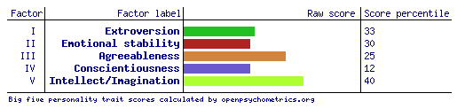

My online tests
-
Myers-Briggs
For my Myers-Briggs test, I have used 16Personalities.
My test determined me to be a turbulent mediator (INFP-T). My role is a diplomat.
My personality traits include:
Mind is 63% Introverted
Energy is 77% iNtuitive
Nature is 57% Feeling
Tactics are 67% Prospecting
Indetity is 63% Turbulent
-
Online learning style
The results of my Online Learning Style Test suggest I am a visual learner, studying best using charts and pictures to represent information. I prefer demonstrations, diagrams, slides, charts, and other visual aids particularly when I am studying alone. In groups, it suggests I use aids such as flash cards.
-
Open source psychometrics project
I have also taken the Big Five Personilty Test.
This is based on The development of markers for the Big-Five factor structure, by Lewis R. Goldberg
What these results mean to me
-
Most of this came as no surprise to me, after all, I have always been in introvert who tends to work impulsively. This has lead me to form schedules I can relax into, rather than sticking to a rigid plan. When it comes to working in a team, I am not usually one to do all the leading, nor the following. I prefer to work concurrently, bouncing off my colleagues' strengths. In any case, I've never been too picky about who I work with, as I rarely find a type of person I clash with. In saying this, I would prefer to be working with people less like myself, and I have always performed better in a diverse environment.